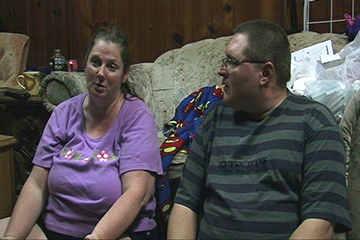
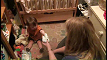
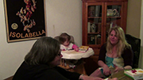

Video Channel
The IA-DMM Community of Practice offers its participants an online video library of examples of actual providers’ home visits to discuss, problem solve and reflect on to expand our knowledge and skills. The short clips offer us the opportunity to gather and give feedback to support our implementation practices. If you would like to add a video to the IA-DMM Youtube channel, please send your clip to Kat and she will upload it for you. Please remember that we need to have the FSU Parental Agreement and also the CEC-RAP on camera and photo release form for both the provider and the family signed and sent to FSU before we can upload any videos to the IA-DMM Youtube channel.
-

Families Talk About the Toy Bag (2:00)
Brandon's parents discuss the benefits of using their own toys and materials for Brandon's play, rather than toys brought in by an early intervention provider.
-
Problem Solving and Practice with Amy and Madison (9:27)
Early ACCESS special education teacher Patty supports Madison's mom Amy to problem solve and practice strategies to help Madison activate a switch to engage with a musical toy.
-

Coaching during Tummy Time: Supporting Caregiver-Child Interaction and Practice (2:28)
Early intervention provider and psychical therapist, Michelle, uses a variety of different coaching strategies to support Ivan's family to help him practice his outcomes during tummy time. Michelle encourages Ivan's mom to reflect on Ivan's improvements and uses direct teaching and guided/caregiver practice to support caregiver-child interaction.
-
Coaching During a Lotion Routine with Jade and Jude (0:21)
Early ACCESS special education teacher Anne works with Jude and his mom Jade as Jade practices strategies to support Jude's learning and development while putting on lotion.
-

Using Observation as a Tool to Support Coaching During a Diapering Routine with Claudia and Edison (4:00)
Early intervention provider Juliann uses a variety of different caregiver coaching strategies as she joins Edison and her mom Claudia in a diaper changing routine. Juliann and Claudia first set the stage by discussing how diapering typically goes and then Juliann observes the dyad in the routine and uses problem solving and guided practice.
-

Identifying Parent Priorities: Claudia Discusses the Book Routine (1:00)
Early intervention provider Juliann encourages Claudia to talk about what she wants Edison to learn from books.